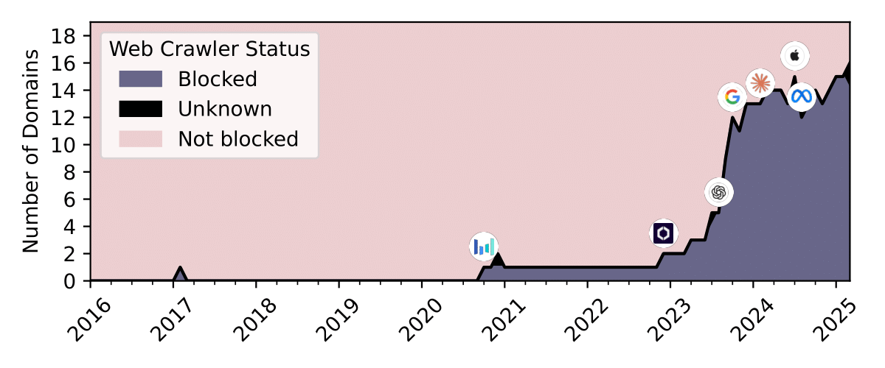
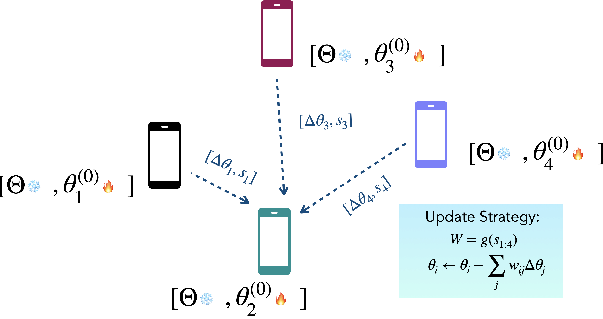

|
Dongyang Fan Hi! Thanks for stopping by :) I'm a passionate 4th-year PhD student at Machine Learning and Optimization Lab at EPFL, supervised by Prof. Martin Jaggi. My name is pronounced as Don-Young. My research interests include:
Email / Google Scholar / Semantic Scholar / Twitter / Github / LinkedIn |

|
ResearchNote: WS denotes Workshop |
|
preprint 2025

|
Beyond URLs: Metadata Diversity and Position for Efficient LLM Pretraining
Dongyang Fan*, Diba Hashemi*, Sai Praneeth Karimireddy, Martin Jaggi arXiv
LLM Pretraining
Metadata
Data Efficiency
|
|
preprint 2025

|
Apertus: Democratizing Open and Compliant LLMs for Global Language Environments
Apertus team (as a member of the pretraining team) arXiv
Open LLMs
Data Compliance
Multilingual
|
|
COLM 2025 WS (oral üèÜ)
|
TiMoE: Time-Aware Mixture of Language Experts
Robin Faro*, Dongyang Fan*, Tamar Alphaidze, Martin Jaggi arXiv / codes / slides
Mixture-of-Experts
Temporal Modeling
LLM Architecture
|
|
NeurIPS 2025
|
URLs Help, Topics Guide: Understanding Metadata Utility in LLM Training
Dongyang Fan, Vinko Sabolčec, Martin Jaggi, arXiv / codes
LLM Training
Metadata
Data Efficiency
Steering
|
|
COLM 2025 (oral üèÜ)

|
Can Performant LLMs Be Ethical? Quantifying the Impact of Web Crawling Opt-Outs
Dongyang Fan, Vinko Sabolčec, Matin Ansaripour, Ayush Kumar Tarun, Martin Jaggi, Antoine Bosselut, Imanol Schlag arXiv / codes / project page / slides
Data Compliance
Ethics
Memorization
Responsible AI
|
|
ICLR WS 2025
|
Do Data Valuations Make Good Data Prices?
Dongyang Fan, Tyler J. Rotello, Sai Praneeth Karimireddy arXiv
Data Valuation
Game Theory
Data Markets
|
|
ICML 2025
|
On-Device Collaborative Language Modeling via a Mixture of Generalists and Specialists
Dongyang Fan*, Bettina Messmer*, Nikita Doikov, Martin Jaggi codes / arXiv
Collaborative Learning
Mixture-of-Experts
On-Device
Federated Learning
|
|
ICLR WS 2024
|
Towards an empirical understanding of MoE design choices
Dongyang Fan*, Bettina Messmer*, Martin Jaggi arXiv
Mixture-of-Experts
Architecture Design
Expert Specialization
|
|
COLM 2024

|
Personalized Collaborative Fine-Tuning for On-Device Large Language Models
Nicolas Wagner, Dongyang Fan, Martin Jaggi codes / arXiv
Collaborative Learning
Personalization
On-Device
Fine-Tuning
|
|
AAAI 2024

|
Ghost Noise for Regularizing Deep Neural Networks
Atli Kosson, Dongyang Fan, Martin Jaggi arXiv
Regularization
Deep Learning
Generalization
|
|
NeurIPS 2023
|
Collaborative Learning via Prediction Consensus
Dongyang Fan, Celestine Mendler-Dünner, Martin Jaggi codes / arXiv / poster
Collaborative Learning
Consensus
Knowledge Distillation
|
Academic Service
|
MiscellaneousIn general I like arts and cultural stuff. I am also an outdoorsy person and I do hiking skiing and sailing. I paint from my hiking trips. For example... 
|
|
Source codes of the website are from here. |